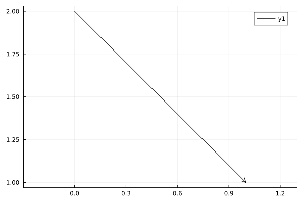
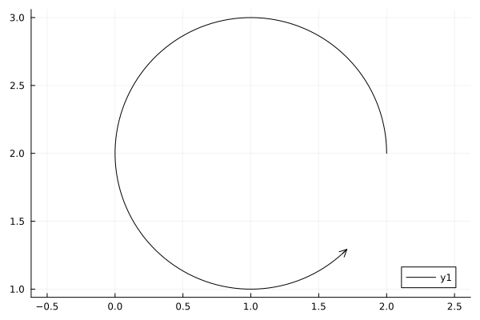
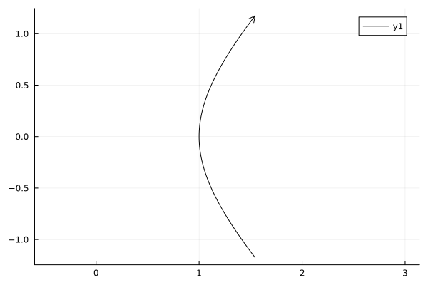

using ElectrostaticOptics
using StaticArrays
using PlotsUsing AbstractCurve2D
Line segment
Easy, just give start and end points.
p₁ = SVector(0.0, 2.0)
p₂ = SVector(1.0, 1.0)
line = ElectrostaticOptics.LineSeg(p₁, p₂)
plot(line, aspect_ratio = :equal)
CircArc
Circular arc segment. Give center, radius, and start/end angles
o = SVector(1.0, 2.0)
r = 1.0
θ₁ = 0.0
θ₂ = 1.75 * π
arc = CircArc(o, r, θ₁, θ₂)
plot(arc, aspect_ratio = :equal)
FuncCurve
You can define any function you like, e.g. a hyperbola.
f(t) = SVector(cosh(t), sinh(t))
hyperbola = FuncCurve(f, -1.0, 1.0)
plot(hyperbola, aspect_ratio = :equal)
This page was generated using Literate.jl.